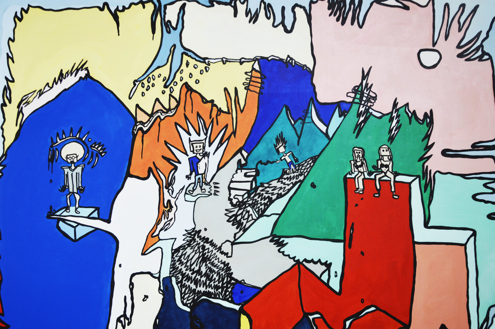
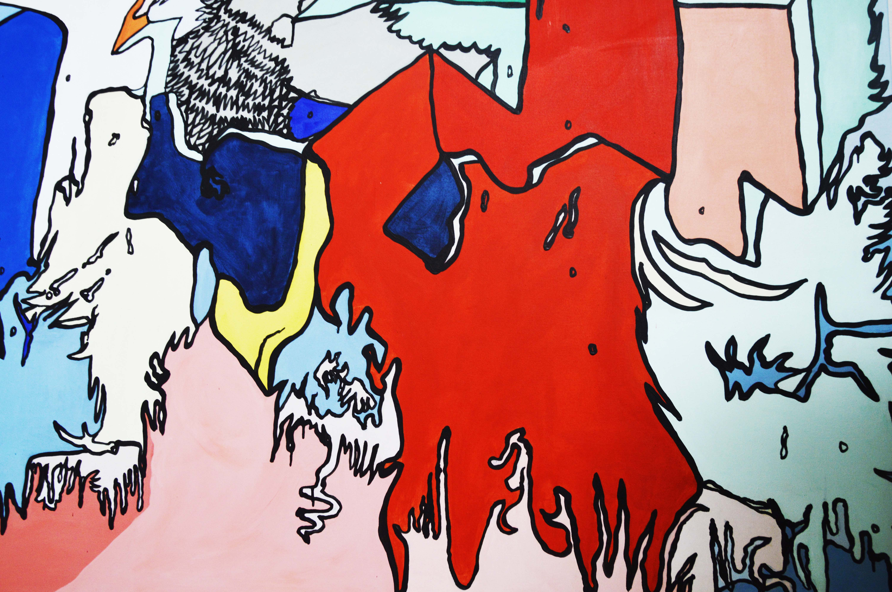
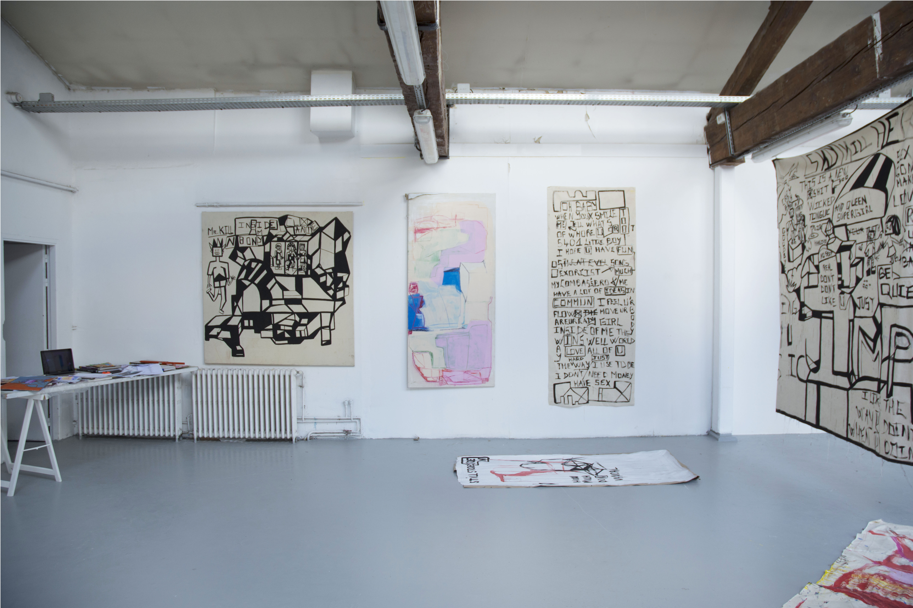
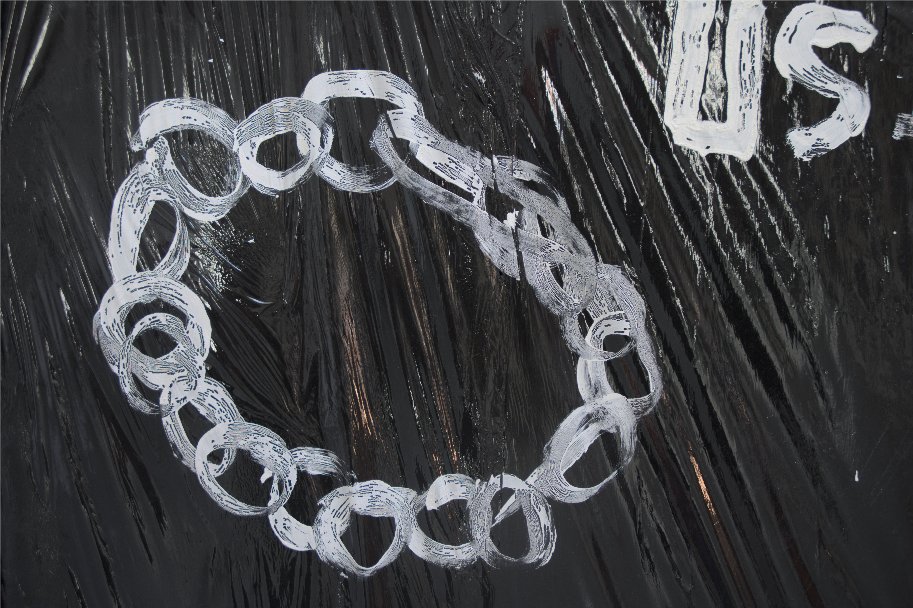
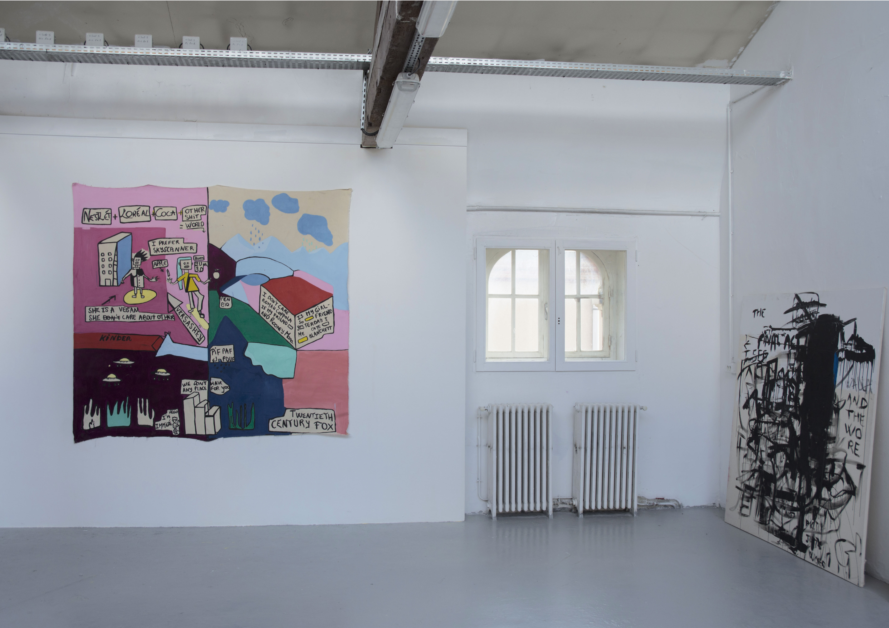
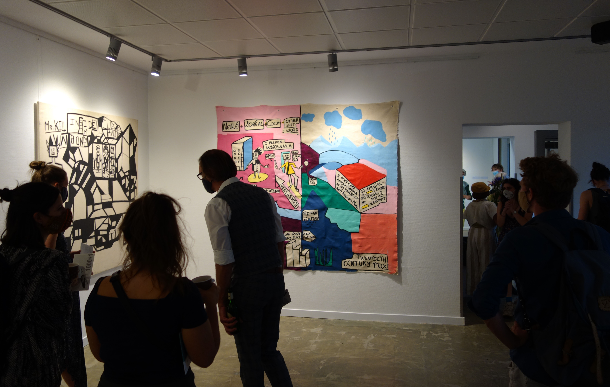
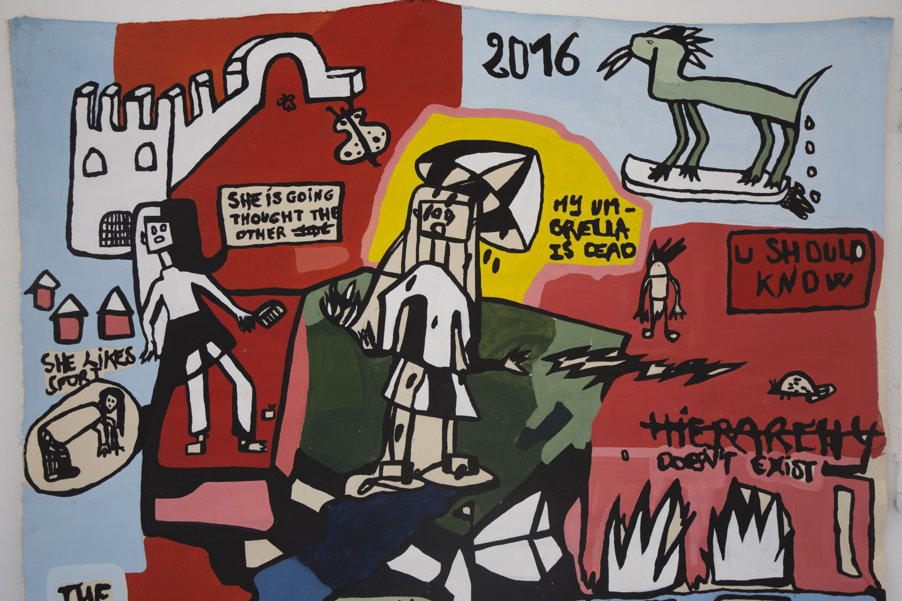
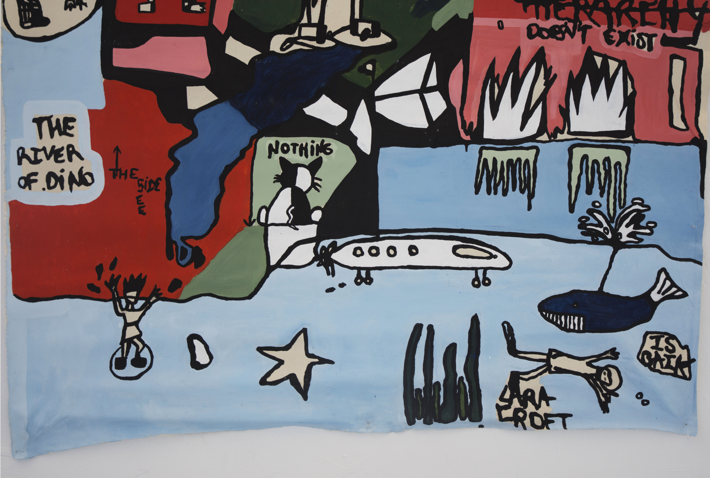
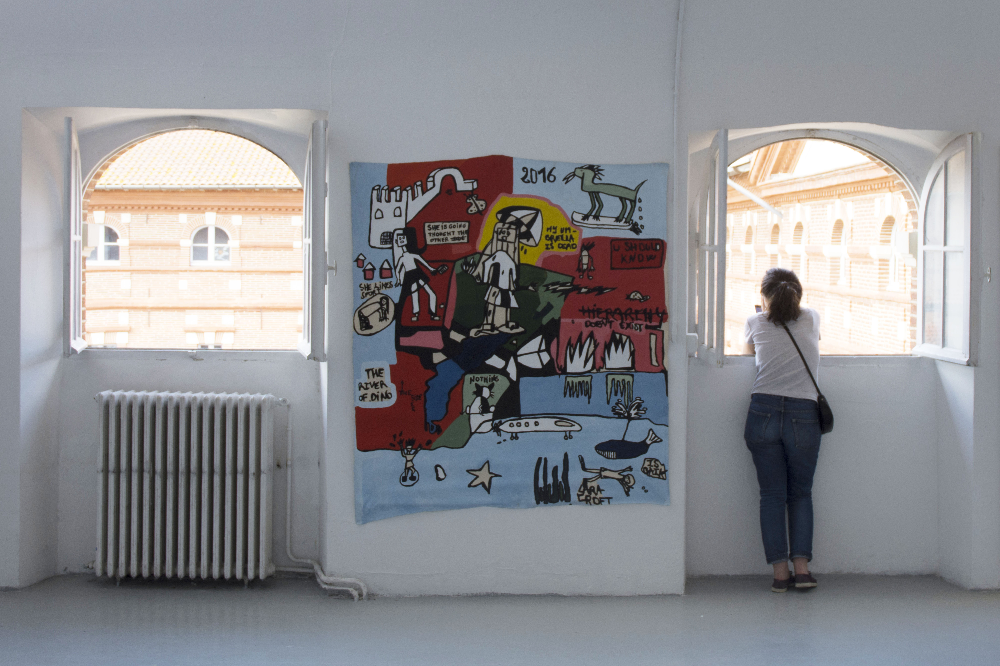
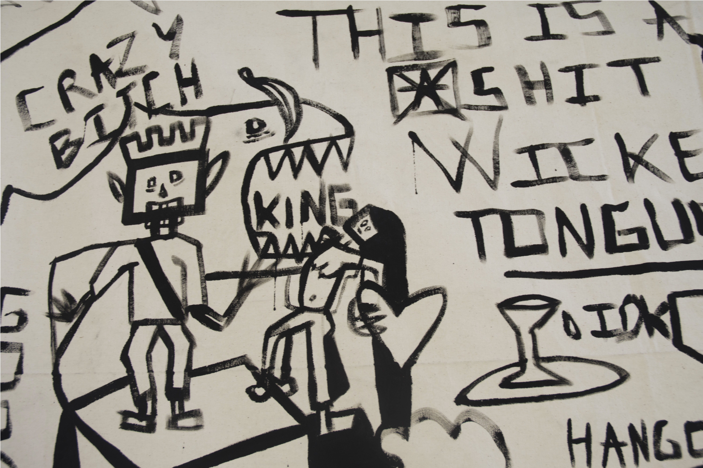

Liebe Und Freiheit

Cimetery’s Night in Glasgow, 2019, acrylic on canvas, 180 x 180 cm
Cimetery’s Night in Glasgow, It's the story of a trip in Scotland between two girls in love. A man can throws magic spells on the city while the background is melting. It draws a plural ballad in the Soviet depths, you will find some fat kicks with reasoning lubricant. With style on flying toast of robotic post rock, the jungle will lead this galactic fleet in the psychocaotic woes. It must be a cake with lots of whipped cream sprinkled with poorly explained classics.







 The Nexus, 2018, installation of canvas, photographies by Illyes El Habchi, 309, isdaT, Toulouse
Charlene treates fashion photography, her own photographs and preparatory drawings as a starter for painting. Inspired by her friends and characters of her entourage, she introduced them in sectorized and colored spaces. They are recognizable by their dresscode, their gestural position. You never really know who is it. What seems to be chaotic in forms is actually a structure ordered, a collection of forms where every forms has its proper space. The color is diluted with water and mixing with white or black, to get the more intense color, more clear or more dark then it gives a pure color, raw, solid, opaque. The black outlines separate colors and characters and create a kind of cartography.
 Big Firms, 2018, acrylic on canvas, 220 x 200 cm
Big Firms, 2018, acrylic on canvas, 220 x 200 cm
Paintings can talk about stars in Cannes during the global warming. Peoples exchange of information about their last Versace brand purchase, veganism, the end of the world. A girl can be under the rain with an umbrella in the middle of nowhere. Cruella D’enfer can cut the tweed-trousers of a person randomly.
 Fresh Legs, 2020, installation of canvas, Insel Galerie, Berlin
 She Likes Sport, 2017, acrylic on canvas, 160 x 140 cm
She Likes Sport, 2017, acrylic on canvas, 160 x 140 cm



In this project you can find many inner spaces, occupied by sexy cyberpunk, scary girls and boys robots. From time to time they are swimming, playing, dancing, drinking, smoking cigarets, listening to music, together or occasionnaly alone. In this serie you can see animal, towns and landscapes taken from fantasy and sub culture wild world.
 Jump, 2019, acrylic on canvas, 200 x 200 cm
Jump, 2019, acrylic on canvas, 200 x 200 cm

 Bony and Clyde, 2017, gouache on canvas, 150 x 150 cm
Bony and Clyde, 2017, gouache on canvas, 150 x 150 cm
 Nazi vs Tyrannosaurus, 2017, gouache on canvas, 40 x 40 cm
Nazi vs Tyrannosaurus, 2017, gouache on canvas, 40 x 40 cm